I photograph bugs using a Belomo loupe held up to my iPhone camera.
If you identify a bug that I have not, enlighten me.
araneae
bold jumping spider
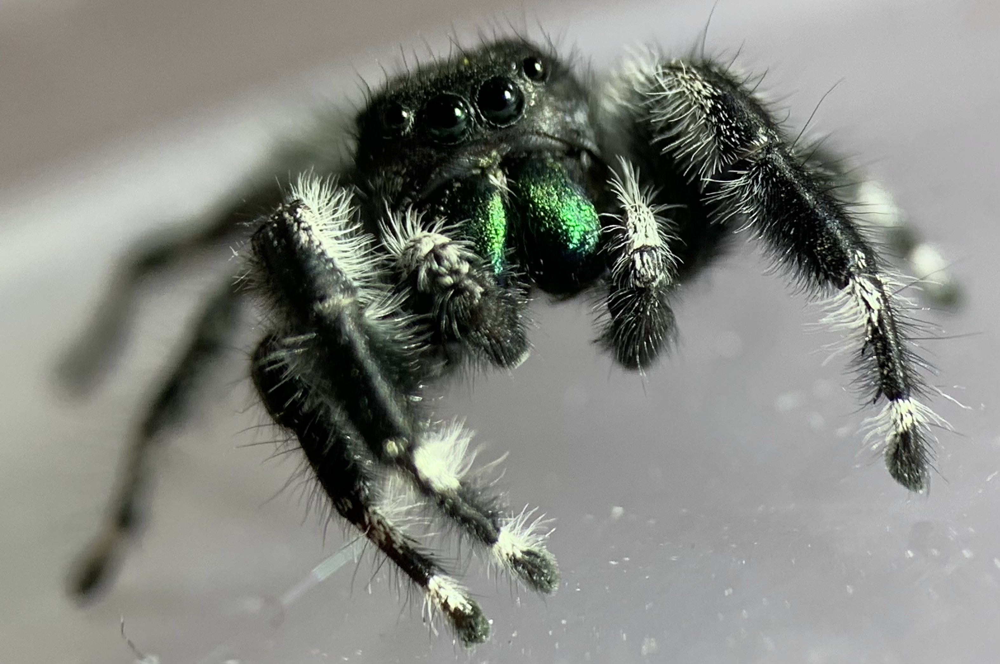 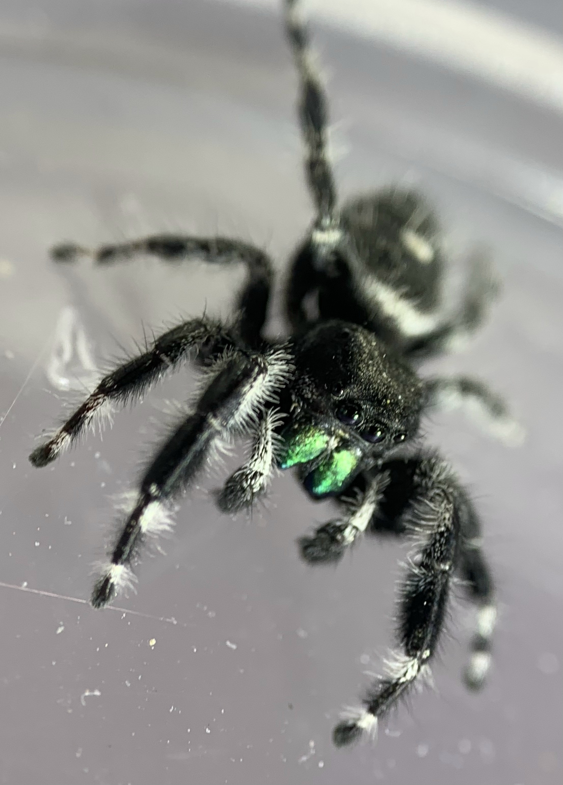flower crab spider
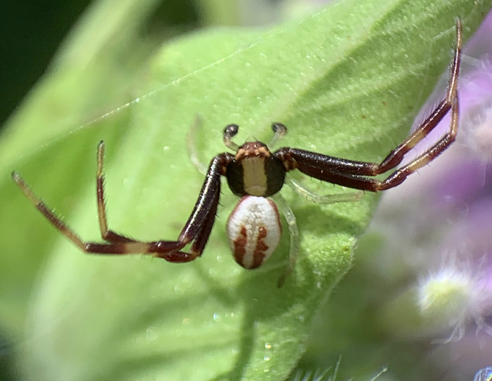Looks like Misumena vatia.
Theridon murarium
zebra jumping spider
insecta
dermaptera
european earwig
hemiptera
red-banded leafhopper
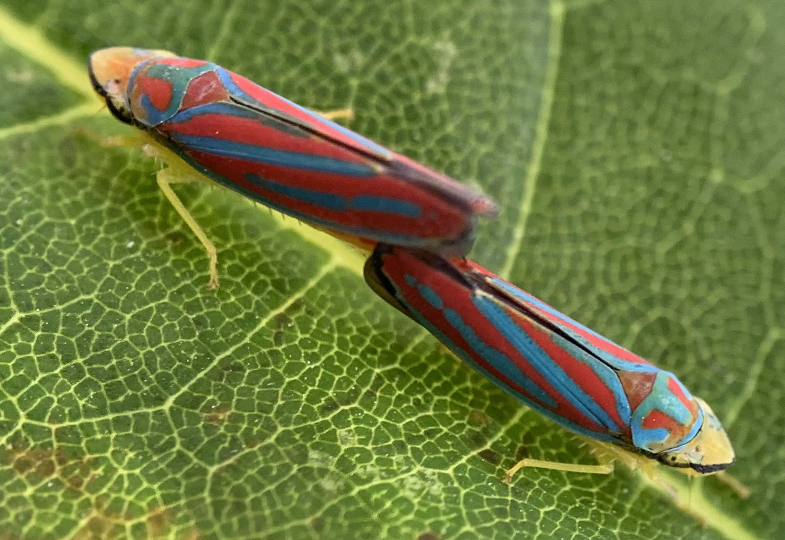red-legged grasshopper
water strider
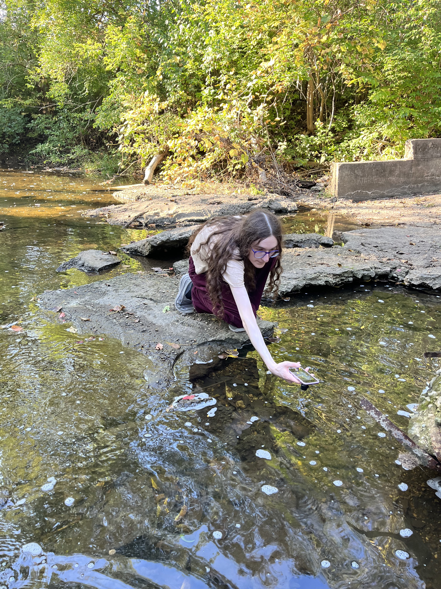NOPE. I could not get my loupe near them. They are so fast and so cautious and have such good eyesight.
hymenoptera
common eastern bumble bee
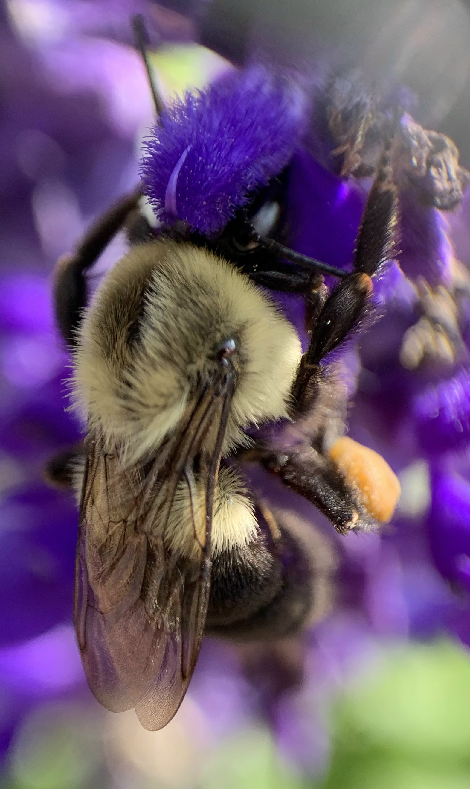lepidoptera
common buckeye
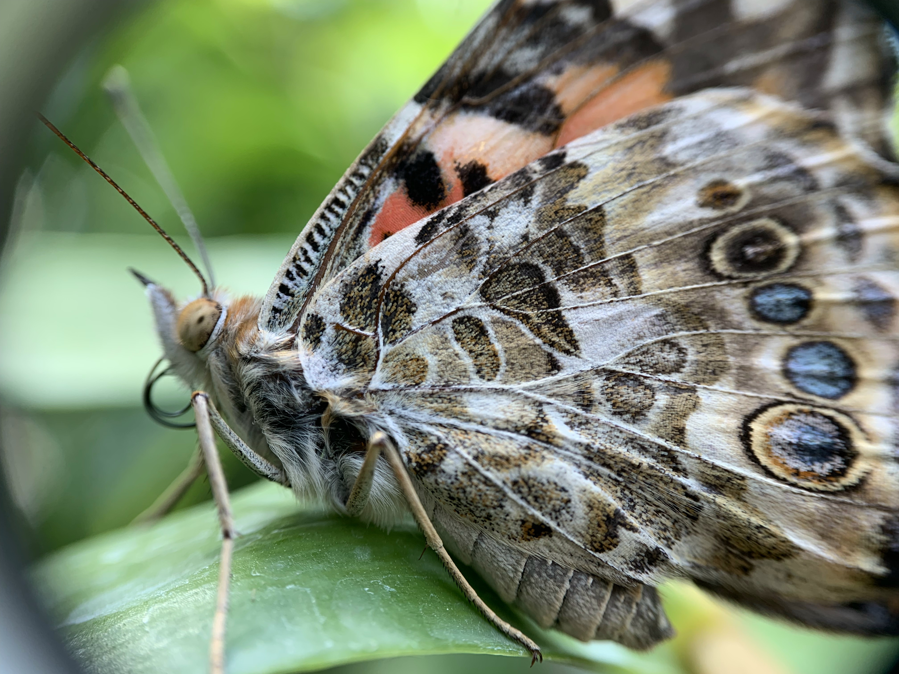? unknown orange-dotted butterfly
I did not take any less-magnified photos of this specimen, so I'm not sure what species it is. Maybe a black swallowtail, but do those have these orange dots? I only see pictures of them with yellow dots, not orange ones.
? another unknown butterfly
Not sure about this one either. Any guesses?
odonata
Enallagma (bluets)
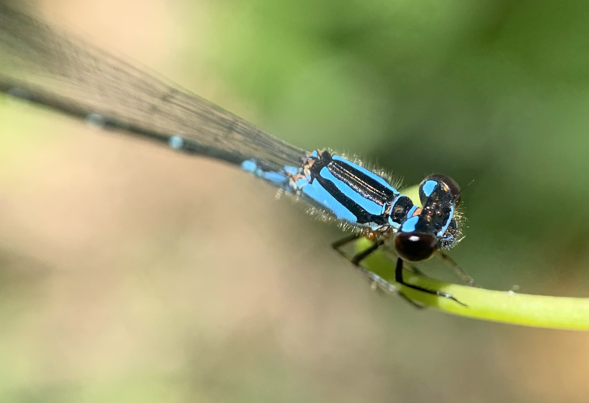 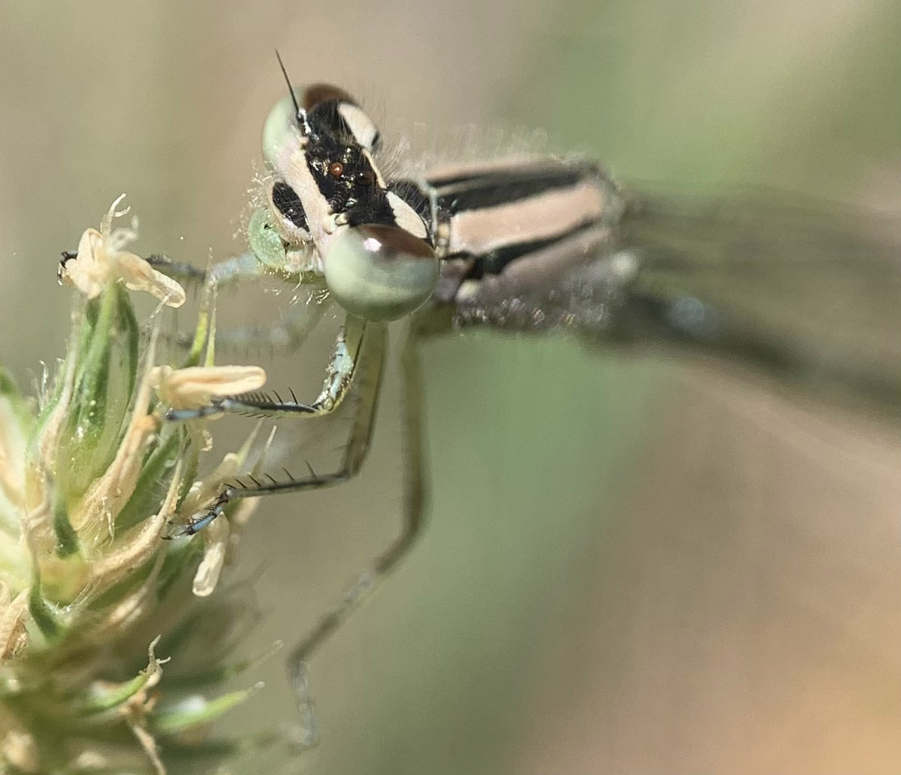psocoptera
booklouse
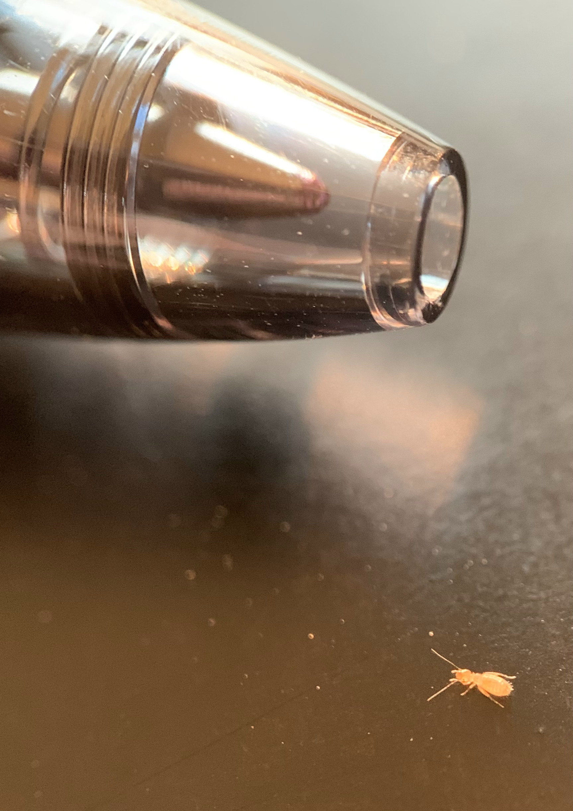isopoda
Porcellio spinicornis
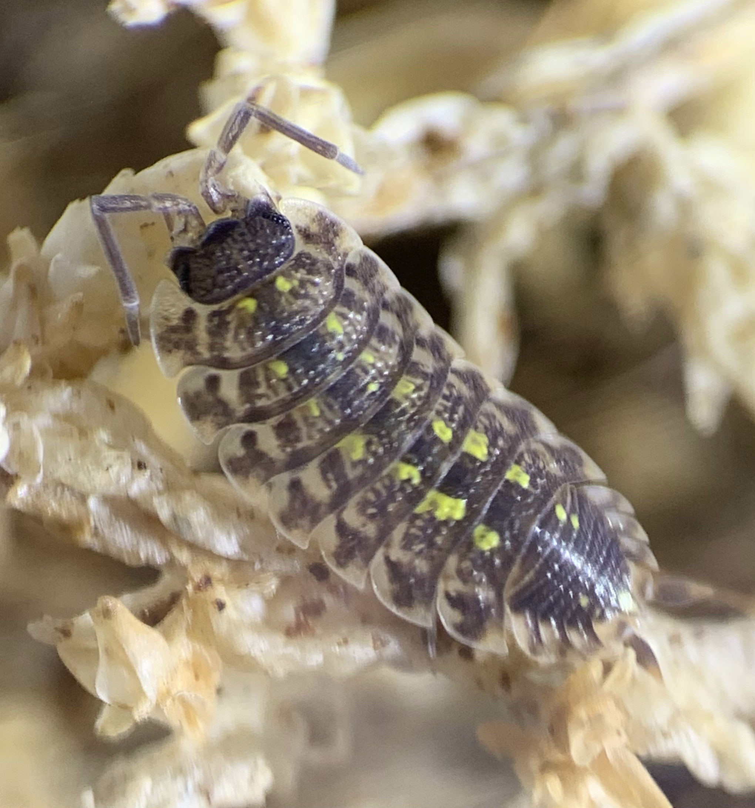Porcellio spinicornis exuvia
Exuvia (shed exoskeleton) of Porcellio spinicornis. Isopods shed in halves, changing their "shirt" and "pants" separately.
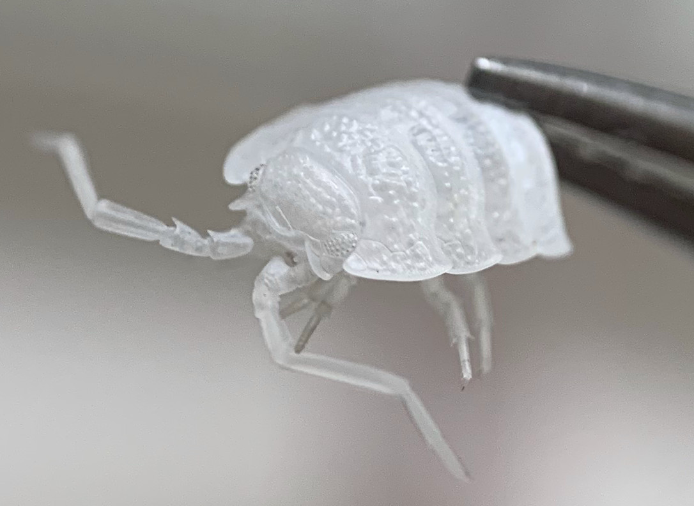myriapoda
chilopoda
house centipede (Scutigera coleoptrata)
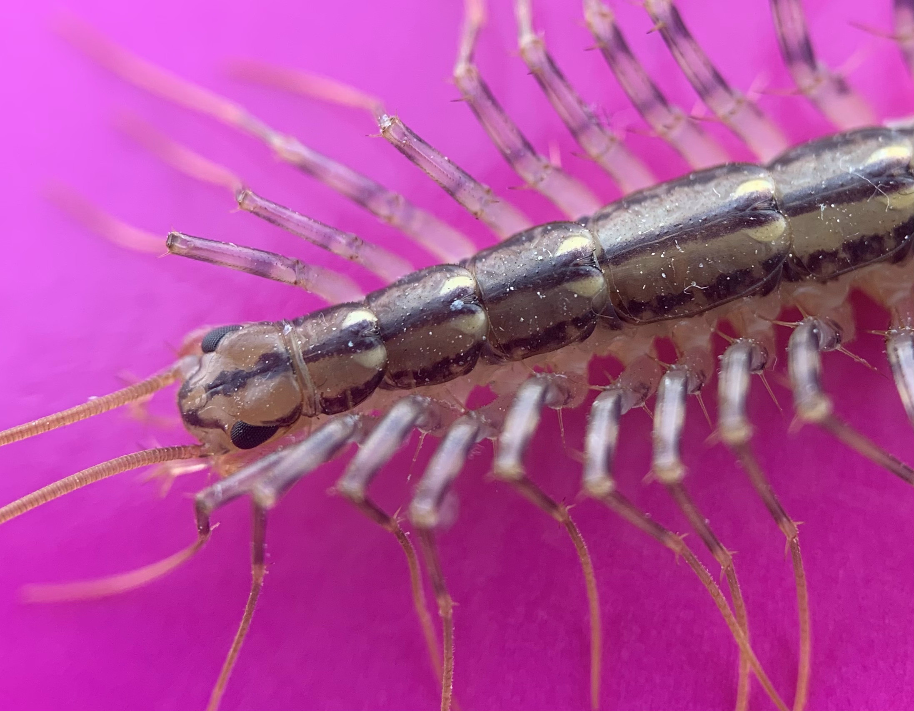diplopoda
parajulidae
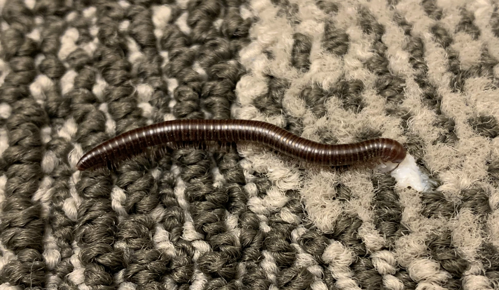I found this one inside a commercial building on a rainy day. When I tried catching it in a cup, I accidentally spilled a stray drop of milk on the floor, which the millipede drank. I thus named it Milky.
I found Milky before getting my loupe, so these shots are less magnified than most others on this page.